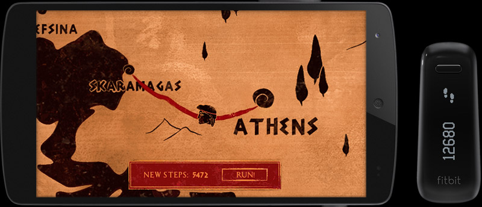

SPARTATHLON
A step-by-step adventure
Health serious game // Unity 2D // IoT // Unity native Android plugin
Spartathlon is a serious game that aims to motivate users of fitness trackers to
reach their daily step goal.
Get engaged in an adventure in which you can only progress as much as you have walked during the day. Reaching your daily step goal gets you to the game's next story point – and to the next challenge!
Get engaged in an adventure in which you can only progress as much as you have walked during the day. Reaching your daily step goal gets you to the game's next story point – and to the next challenge!
In the game, you follow in the footsteps of legendary Athenian messenger
Pheidippides (490 B.C.) who is sent to Sparta to ask for the help of the Spartan army against the
threatening Persian invasion.
The problem: Pheidippides actually cannot remember directions very well. Hence, for getting to Sparta, he will need to ask the locals he meets on the way for help. However, not everyone who offers to help Pheidippides is trustworthy or will do so without requesting a favour in return.
The problem: Pheidippides actually cannot remember directions very well. Hence, for getting to Sparta, he will need to ask the locals he meets on the way for help. However, not everyone who offers to help Pheidippides is trustworthy or will do so without requesting a favour in return.

Prototype Development
The game prototype of Spartathlon was developed using Unity 4.6 for Android 5.0
and Fitbit fitness trackers. The game uses a native Android plugin for handling
the required user data requests to the Fitbit web API.
The prototype features two example levels, the first of which is
demonstrated in the slideshow:
Project Specs
 Jessica
Bergs 2020 All rights reserved
Jessica
Bergs 2020 All rights reserved